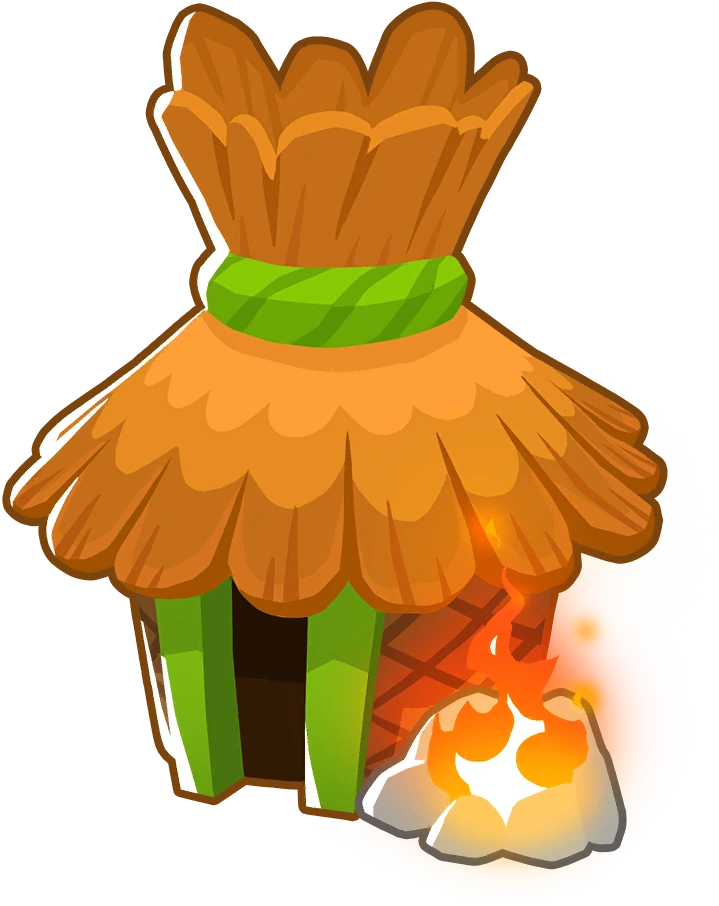

| Image | Info | Ability |
|---|---|---|
|
Super Monkey: The Super Monkey in Bloons TD 6 is a powerful, high-speed tower that excels in late-game rounds. With upgrades, it can become a Sun Avatar, Tech Terror, or True Sun God—or even the ultimate Vengeful True Sun God (VTSG)—making it one of the best late-game towers as it provides . |
|
|

|
Ninja Monkey: The Ninja Monkey in Bloons TD 6 is a swift, camo-detecting tower that pops bloons with shurikens. It can be upgraded for rapid attacks, explosive power, or strong MOAB damage, making it good for early, mid, and late game. |
|
|  |
Monkey Village: The Monkey Village in BTD6 boosts nearby towers, granting camo detection, increased attack speed, and reduced upgrade costs. Upgrades add powerful buffs, like increased damage and short-term supercharging abilities. |
|